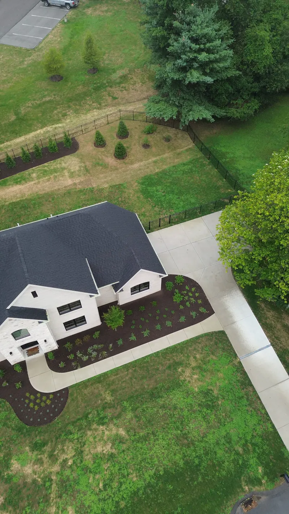
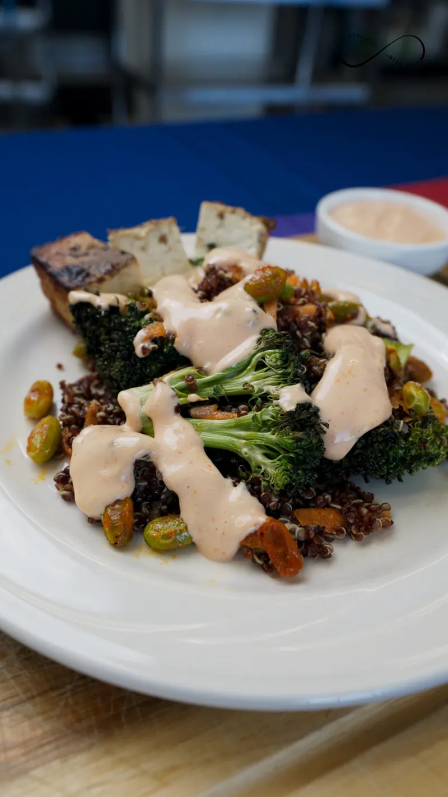
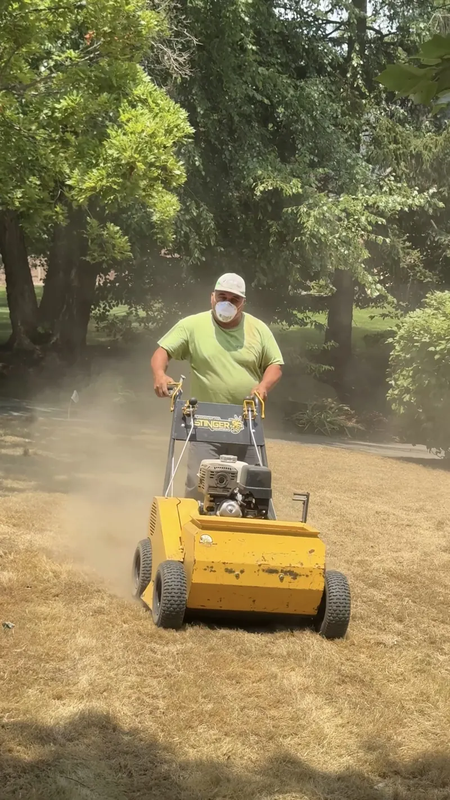

ORGANIC SOCIAL
Author: Mike Pernice, Founder · Last updated: October 2026
We build and manage your brand's social media presence from the ground up — content calendars, engagement playbooks, growth tactics, and daily community management across Instagram, TikTok, Facebook, and LinkedIn.
What's Included
- Social media strategy and audit
- Monthly content calendar development
- Post creation — copy, graphics, and scheduling
- Community management and engagement
- Hashtag strategy and optimization
- Growth tactics and audience building
- Platform-specific strategy (Instagram, TikTok, Facebook, LinkedIn)
- Monthly analytics and performance reporting
Want a social presence that actually gets managed every day?
Request a ProposalWho It's For
Brands that want a consistent, professional social media presence without hiring an in-house team. Whether you're starting from zero or need to level up an existing account, we become your dedicated social media department.
Organic Social in Action


From the Sylvan Gardens content calendar
Designed feed posts across a year of the calendar: a why-Sylvan carousel cover, a turf-care prompt, the New Year before-and-after, a landscape-lighting promo, and the install and maintenance service posts.


Story slides and reel covers
Built to each client’s own template: Union Trust Building’s National Cocktail Day slide and the cocktail photo behind the series, then three covers from the CSMP kitchen series.





This is what a month of organic content looks like.
Start Your Content CalendarReady to grow your reach like this?
Request a ProposalSee It in Action
SYLVAN GARDENS
CASE SPECIFIC
MEAL PREP
X SHADYSIDE
UNION TRUST
BUILDING
See how we would run your channels.
Book a Social AuditFrequently Asked Questions
How many posts per month do you create?
Our content calendars typically include 8-12 feed posts plus daily story content per platform. The exact volume depends on your plan and platforms managed.
Do you respond to comments and DMs?
Yes — community management is included. We monitor and respond to comments, DMs, and mentions to keep your audience engaged.
Can I approve posts before they go live?
Absolutely. We submit content for review before publishing and incorporate your feedback into the final posts.
Which platforms do you manage?
We manage Instagram, Facebook, TikTok, and LinkedIn. We recommend platforms based on where your audience is most active.
Your audience is already scrolling.
Let's give them something worth stopping for.